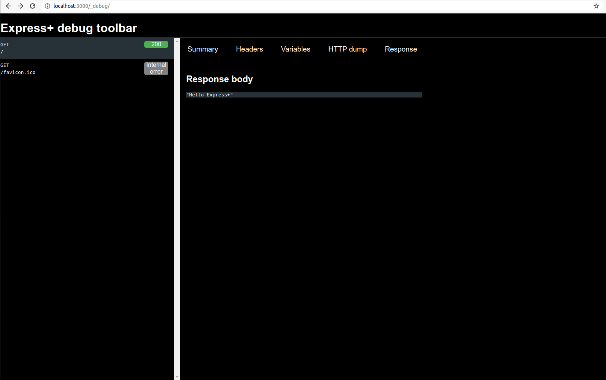
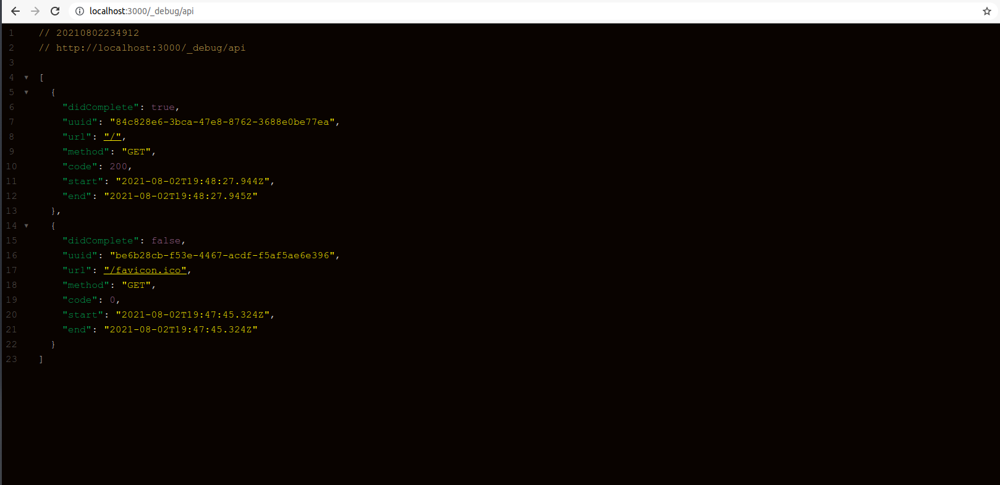
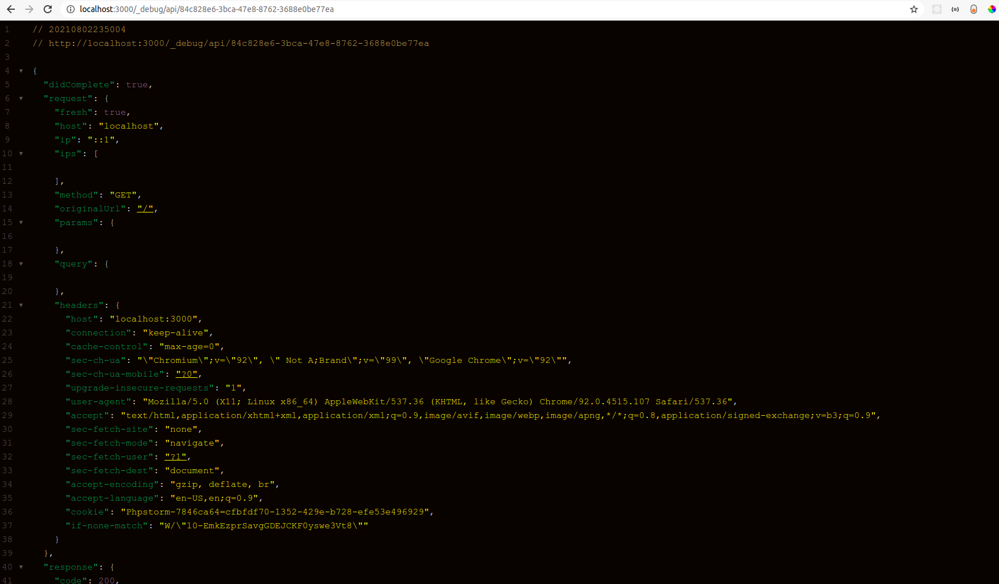

Get Started
Learn installation how to create router and send response for client.
Installation
$ npm install @ulvimemmeedov/expressjsplus
Hello World
import module is your main js
const { Service, Router } = require('@ulvimemmeedov/expressjsplus');
Router.get('/',( request,response ) => {
response.json('Hello, World!');
});
Service.use(Router); Service.listen(3000);
Import Service and Router from module. Then call get method from Router After the url is specified, we write a callback function and send the response in json format.
Routing
const { Router } = require('@ulvimemmeedov/expressjsplus');
//Router.method('/path',HANDLER)
Router.get('/',( request,response ) => {
//some...
});
Router.post('/',( request,response ) => {
//some...
});
Router.put('/',( request,response ) => {
//some...
});
Router.delete('/',( request,response ) => {
//some...
});
Router.all('/',( request,response ) => {
//some...
});
Router is an instance of router. METHOD is an HTTP request method, in lowercase. PATH is a path on the server. HANDLER is the function executed when the route is matched.
Route methods
A route method is derived from one of the HTTP methods, and is attached to an instance of the express class. The following code is an example of routes that are defined for the GET and the POST methods to the root of the app.
Express+ supports methods that correspond to all HTTP request methods( taken from ExpressJs ): get, post, and so on. For a full list, see Router.METHOD. There is a special routing method, Router.all(), used to load middleware functions at a path for all HTTP request methods. For example, the following handler is executed for requests to the route “/secret” whether using GET, POST, PUT, DELETE, or any other HTTP request method supported in the http module.
const { Router } = require('@ulvimemmeedov/expressjsplus');
Router.all('/secret', (request, response, next) {
console.log('Accessing the secret section ...')
next() // pass control to the next handler
});
You can read the rest of the routers in the Express docs
Middleware
Overview
Middleware functions are functions that have access to the request object (req), the response object (res), and the next function in the application’s request-response cycle. The next function is a function in the Express router which, when invoked, executes the middleware succeeding the current middleware. Middleware functions can perform the following tasks: Execute any code. Make changes to the request and the response objects. End the request-response cycle. Call the next middleware in the stack. If the current middleware function does not end the request-response cycle, it must call next() to pass control to the next middleware function. Otherwise, the request will be left hanging.
Malis percipitur an pro. Pro aperiam persequeris at, at sonet sensibus mei, id mea postulant definiebas concludaturque. Id qui malis abhorreant, mazim melius quo et. At eam altera dolorum, case dicant lobortis ius te, ad vel affert oportere reprehendunt. Quo no verterem deseruisse, mea brute postea te, ne per tacimates suavitate vituperatoribus.
Starting with Express 5, middleware functions that return a Promise will call next(value) when they reject or throw an error. next will be called with either the rejected value or the thrown Error.
Example
const { Router,Service } = require('@ulvimemmeedov/expressjsplus');
lets myLogger = (request, response, next) => {
console.log('LOGGED'); next();
}
Service.use(myLogger);
Router.get('/', (request, response) => {
res.json('Hello World!');
});
Service.use(Router); Service.listen(3000);
You can read the rest of the middleware in the Express docs
Template engines
A template engine enables you to use static template files in your application. At runtime, the template engine replaces variables in a template file with actual values, and transforms the template into an HTML file sent to the client. This approach makes it easier to design an HTML page.
Some popular template engines that work with Express are Pug, Mustache, and EJS, also Express+ is supported.
Example
$ npm install ejs
const { Service, Router } = require('@ulvimemmeedov/expressjsplus');
Service.set('view engine', 'pug')
Service.use(myLogger);
Router.get('/', function (req, res) {
res.render('index', { title: 'Hey', message: 'Hello there!' })
})
Service.use(Router);
Service.listen(3000);
You can read the rest of the Template engines in the Express docs
Global
"global" is a global object and very easy to use, props in react and other front end libraries are similar. By using the global, you can easily move a data to the service you want in your application. The data in the global is stored in the "key":"value" type. You can keep the data you have taken from the database, etc., and you can manage the cache.
Example
const {Service,Router,Global,SetGlobal} = require( '@ulvimemmeedov/expressjsplus');
SetGlobal('key',"value");
Router.get('/',( request,response ) =>
response.json(Global.key));
Service.use(Router).listen(3000)
// 20210801144433
// http://localhost:3000/
"value"
Global Object
import {Service,Router,Global,SetGlobal} from '@ulvimemmeedov/expressjsplus';
SetGlobal('key',"value");
Router.get('/',( request,response ) =>
response.json(Global));
Service.use(Router).listen(3000)
// 20210801145011
// http://localhost:3000/
{
"key": "value"
}
import {Service,Router,Global,SetGlobal} from '@ulvimemmeedov/expressjsplus';
SetGlobal('object',{"key":"set global object"}); // set Global into object
SetGlobal('array',['1',2,null,undefined,{"object":"value"}]);// set Global into Array
SetGlobal('json',{ // set Global into Json
"object in json": {
"key": "set global object"
},
"array in json": [
"1",
2,
null,
null,
{
"object in array ": "value"
}
]
});
Router.get('/',( request,response ) =>
response.json(Global));
Service.use(Router).listen(3000)
// 20210801145607
// http://localhost:3000/
{
"object": {
"key": "set global object"
},
"array": [
"1",
2,
null,
null,
{
"object": "value"
}
],
"json": {
"object in json": {
"key": "set global object"
},
"array in json": [
"1",
2,
null,
null,
{
"object in array ": "value"
}
]
}
}
Error Handler
Error Handling refers to how Express catches and processes errors that occur both synchronously and asynchronously. Express comes with a default error handler so you don’t need to write your own to get started.
Catching Errors It’s important to ensure that Express catches all errors that occur while running route handlers and middleware. Errors that occur in synchronous code inside route handlers and middleware require no extra work. If synchronous code throws an error, then Express will catch and process it. For example:
import {Service,Router} from '@ulvimemmeedov/expressjsplus';
Router.get('/',( request,response ) => {
throw new Error('ERROR') // Express will catch this on its own.
})
Service.use(Router).listen(3000)
Error: ERROR
response
Error: ERROR
example
import {Service,Router} from '@ulvimemmeedov/expressjsplus';
import fs from 'fs';
Router.get('/',( request,response,next ) => {
fs.readFile('/file-does-not-exist', (err, data) => {
if (err) {
next(err) // Pass errors to Express.
} else {
res.send(data)
}
})
})
Service.use(Router).listen(3000)
response
Error: ENOENT: no such file or directory, open '/file-does-not-exist'
You can read the rest of the Error Handler in the Express docs
Async Handler
Async Handler is express async handler module
this is middleware for handling exceptions inside of async express routes and passing them to your express error handlers.
import {Service,Router,AsyncHandler, Global} from '@ulvimemmeedov/expressjsplus';
Router.get('/',AsyncHandler( async ( request,response ) => {
const users = await Global.User;
if (!users) {
response.status(404).json({
success:false,
msg:"Not Found"
})
}
response.status(200).json({
success:true,
users:users
})
}))
Service.use(Router).listen(3000)
Controller
MongoController
MongoController is a base controller class that contains the find, findOne, create, findOneAndUpdate, and findOneAndDelete methods. Must be inherited from a class to use.
create method example
import {Router, Service, Mongoose, MongoController, JsonParser} from '@ulvimemmeedov/expressjsplus';
export const conn = async () =>{
try {
await Mongoose.connect('mongooseURI', { useNewUrlParser: true, useFindAndModify: false,
useCreateIndex: true,
useUnifiedTopology:true });
console.log('db connection success')
} catch (error) {
console.log(error);
}
}
conn();
const SchemaModel = new Mongoose.Schema({
title:String,
description:String
})
const schemaModel = Mongoose.model('Schema',SchemaModel)
class Controller extends MongoController {
constructor(model) {
super(model)
}
}
const ctrl = new Controller(schemaModel);
Service.use(JsonParser()).post('/',ctrl.Create).listen(3000,()=>console.log('app running'))
response
{
"success": true,
"object": {
"_id": "6106ce43efc2ec4c0cd696db",
"title": "Express+",
"description": "All you need tool in one web framework for NodeJs."
}
}
We enter the model as a parameter in the constructor of our class, then add our model to it as super, and in the next step, we create an instance of the inherited class and send our model as a parameter to it.
Update method example
class Controller extends MongoController {
constructor(model) {
super(model)
}
}
const ctrl = new Controller(schemaModel);
Service.use(JsonParser()).put('/',ctrl.Update).listen(3000,()=>console.log('app running'))
*To use the update method, the id must be sent in the request body.
Find method example
class Controller extends MongoController {
constructor(model) {
super(model)
}
}
const ctrl = new Controller(schemaModel);
Service.use(JsonParser()).get('/',ctrl.Find).listen(3000,()=>console.log('app running'))
FindOne method example
class Controller extends MongoController {
constructor(model) {
super(model)
}
}
const ctrl = new Controller(schemaModel);
Service.use(JsonParser()).get('/',ctrl.FindOne).listen(3000,()=>console.log('app running'))
*To use the FindOne method, the id must be sent in the request body.
Toolbar
/*
We thank Liam Svanåsbakken Crouch and Noah Johnson for their contribution.*/
Screenshots #1
Toolbar is a monitoring panel for your APIs, this is completely embedded in express+ You can see your request object and response object with the toolbar You can see the data sent with params and query in the variable section You can see the request and response header in the header section You can monitor your cookies and everything sent in the header.
Screenshots #2

User Guide
import { Service,Router,ExpressToolBar,dotenv } from '@ulvimemmeedov/expressjsplus';
dotenv.config();
// Start Toolbar and send parametr Service
ExpressToolBar.default.Start(Service);
Router.get('/',(req,res)=>{
res.json('Hello Express+')
})
Service.use(Router).listen(3000)
// terminal log
DebugToolbar: Attached to Express + instance
// running at http://localhost:3000/_debug/
Screenshots #3

You can get your APIs in json format in /_debug/api extension with start and end times
Screenshots #4

You can access extensive information in json format by typing the uuid of the report at the end of the
/_debug/api/ extension
example : localhost:3000/_debug/api/84c828e6-3bca-47e8-8762-3688e0be77ea
from the .env file If you add DEBUGBAR section and EXPRESSPLUS section and set true, you can get notification when the application is opened.
example
// .env
EXPRESSPLUS = true
DEBUGBAR = true